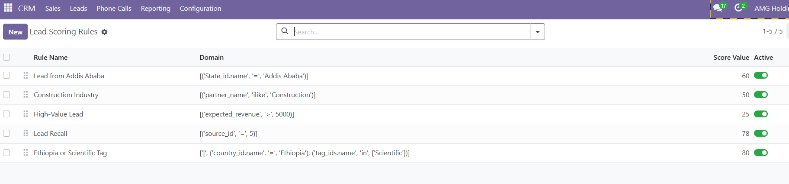
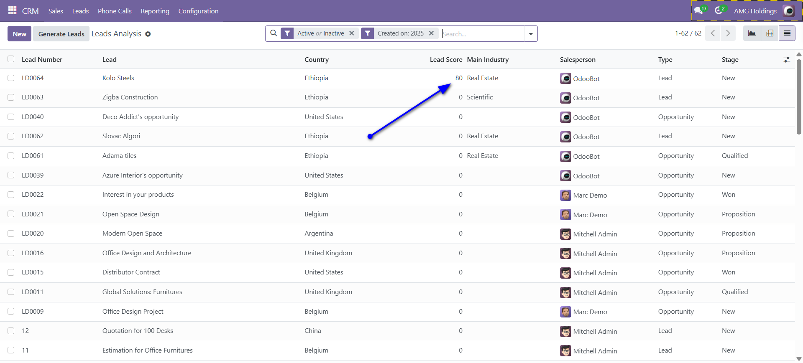

AMG CRM Lead Scoring
Prioritize Your Leads with a Powerful, Rule-Based Scoring Engine
This module replicates a key feature of Odoo Enterprise Edition for the Community Edition.
Key Features
Configurable Rules
Create powerful and flexible scoring rules using Odoo's domain syntax to match any attribute on a lead.
Automatic Scoring
Leads are scored automatically upon creation or update, providing real-time insights into your pipeline's quality.
Easy Prioritization
A "Lead Score" field is added to list and form views, allowing your sales team to instantly sort and focus on the hottest leads.
Screenshots
Simple and Powerful Rule Configuration
Define rules with specific domains and score values from a dedicated configuration menu.
Lead Score in List View
Easily sort your leads by score to identify the most promising prospects at a glance.
Lead Score on Form View
The calculated score is clearly visible on the lead/opportunity form.